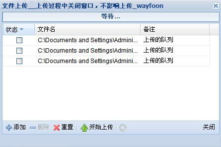
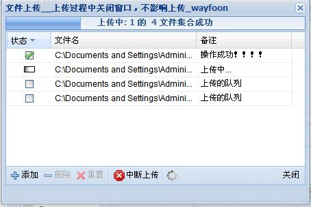

Ext.ux.UploadDialog 像ext一样展现给用户震撼的界面：
如图：上传之前

上传过程中：

强悍吧。怎样使用呢。？
自己去搜索 Ext.ux.UploadDialog.包下载
使用是出来导入必要的ext包还需要
<link rel="stylesheet" href="Ext.ux.UploadDialog/UploadDialog/css/Ext.ux.UploadDialog.css" />
<script type="text/javascript" src="Ext.ux.UploadDialog/Ext.ux.UploadDialog.packed.js"></script>
使用很简单 弄个onclick事件 核心代码如下
- function insertImages()
- {
- dialog = new Ext.ux.UploadDialog.Dialog({
- title: '文件上传__上传过程中关闭窗口，不影响上传_wayfoon',
- url:wayfoon.MMS.DataPage +'/xxx.action?action=xxx',
-
- width : 450,
- height : 300,
- minWidth : 450,
- minHeight : 300,
- draggable : true,
- resizable : true,
-
- constraintoviewport: true,
- permitted_extensions:['JPG','jpg','jpeg','JPEG','GIF','gif','bmp','BMP'],
- modal: true,
-
- reset_on_hide: false,
- allow_close_on_upload: true,
- upload_autostart: false
- });
-
- dialog.show();
- dialog.on('uploadsuccess', onUploadSuccess);
- }
提交时，默认提交的文件名是file 你可以修改 post_var_name: 'myfile',
dialog 有很多事件，如下英文。例子中使用了uploadsuccess事件
- filetest - fires before file is added into the queue, parameters:
dialog - reference to dialog
filename - file name
If handler returns false then file will not be queued.
- fileadd - fires when file is added into the queue, parameters:
dialog - reference to dialog
filename - file name
- fileremove - fires when file is removed from the queue, parameters:
dialog - reference to dialog
filename - file name
record - file record
- resetqueue - fires when upload queue is resetted, parameters:
dialog - reference to dialog
- beforefileuploadstart - fires when file as about to start uploading:
dialog - reference to dialog
filename - uploaded file name
record - file record
If handler returns false then file upload will be canceled.
- fileuploadstart - fires when file has started uploading:
dialog - reference to dialog
filename - uploaded file name
record - file record
- uploadsuccess - fires when file is successfuly uploaded, parameters:
dialog - reference to dialog
filename - uploaded file name
data - js-object builded from json-data returned from upload handler response.
record - file record
- uploaderror - fires when file upload error occured, parameters:
dialog - reference to dialog
filename - uploaded file name
data - js-object builded from json-data returned from upload handler response.
record - file record
- uploadfailed - fires when file upload failed, parameters:
dialog - reference to dialog
filename - failed file name
record - file record
- uploadcanceled - fires when file upload canceled, parameters:
dialog - reference to dialog
filename - failed file name
record - file record
- uploadstart - fires when upload process starts, parameters:
dialog - reference to dialog
- uploadstop - fires when upload process stops, parameters:
dialog - reference to dialog
- uploadcomplete - fires when upload process complete (no files to upload left), parameters:
dialog - reference to dialog
注意该多文件上传，每次其实只上传了一个文件，多个文件是分多次上传的。
看到了有很多后台代码采用了多文件 循环读取，只是没有必要的，我们只要当一个文件处理就可以了。
网上很多例子，也只能称为例子，离应用还有点距离，应用的时候，还需要灵活点
比如我们需要传入自己的参数，网上很难找到，其实我们可以在事件中来改变 提交的参数，
采用属性 base_params:{ hehe: "wayfoon" } 来实现,
function onUploadSuccess(dialog, filename, resp_data, record)
{
你可以改变dialog的某些值
resp_data 是返回的json数据
}
发表于 @ 2008年12月17日 17:07:00|评论(loading...)|收藏